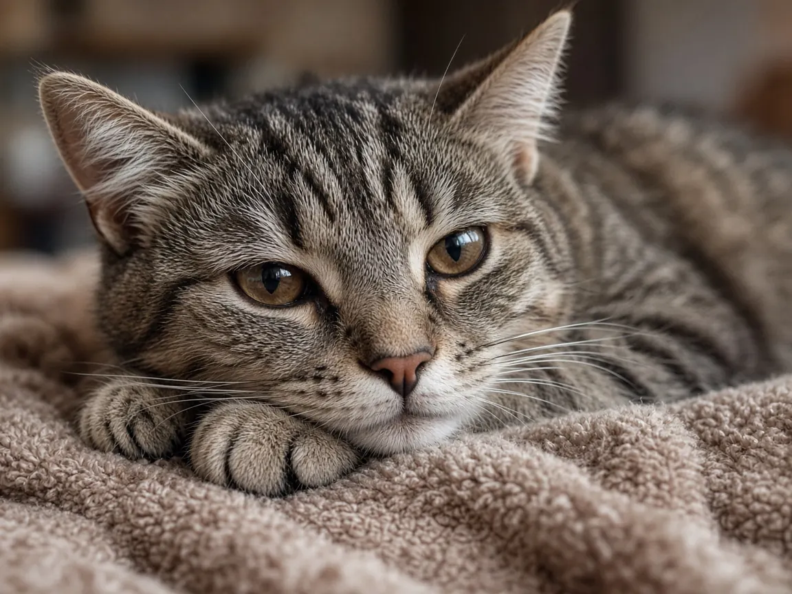

How often should a cat go to the vet? At least once a year
Every cat needs a full veterinary checkup at least once a year. Kittens need a series of visits in their first months for vaccines and neutering. From age 10, the 2021 AAFP Feline Senior Care Guidelines recommend a visit every six months, and every four months for cats over 15. Cats with ongoing health problems may need to go more often.

Vet visit schedule by age
| Age (life stage) | How often | Main focus |
|---|---|---|
| Under 1 year (kitten) | Every 3 to 4 weeks from 6 to 8 weeks old until 16 to 20 weeks, then at 6 months | Core vaccines, parasite control, microchip, neutering by about 5 months, checks for birth defects |
| 1 to 6 years (young adult) | At least once a year | Weight and body condition, teeth, vaccine boosters as due, parasite control, behavior |
| 7 to 10 years (mature adult) | At least once a year | As above, plus baseline blood and urine tests and blood pressure as your vet advises |
| 10 to 15 years (senior) | Every 6 months | Early detection of kidney disease, thyroid disease, diabetes, arthritis, dental disease and high blood pressure |
| Over 15 years | Every 4 months | As above, plus pain, mobility, weight, appetite and quality of life |
Life stages and the yearly minimum from the 2021 AAHA/AAFP Feline Life Stage Guidelines. The six month and four month senior intervals are from the 2021 AAFP Feline Senior Care Guidelines, as reported by AVMA News on 28 July 2021. Kitten vaccine timing is from the 2020 AAHA/AAFP Feline Vaccination Guidelines, which we did not re-open on this pass.
AAHA also says the age bands are a starting point, not a rule that ignores the cat in the carrier. Some cats over 10 stay in excellent condition, and the vet may still follow the mature adult rhythm for that cat. The senior guidelines are the default when the vet has not said otherwise. Detail on the later years is on the senior cat care page, and the first year is on the kitten care guide.
Why yearly visits matter even for a healthy cat
Cats hide illness and pain very well, and many of the diseases that affect them develop slowly. A full physical examination picks up things owners rarely notice at home: a small weight loss, a heart murmur, a thyroid lump, a painful tooth, or stiff joints. The 2021 AAHA/AAFP guidelines put it simply: all cats need a full, thorough physical examination, whatever their life stage.
Two examples show why early detection pays off:
- Dental disease: Cornell's dental page, which says it was updated in June 2017 and which we re-read on 20 November 2026, still reports studies finding that 50 to 90% of cats over four years old have some form of dental disease. That can be painful enough to stop a cat eating. The yearly adult visit is where this shows up, years before the schedule shortens at age 10.
- Chronic kidney disease: Cornell's kidney page, updated January 2025, still estimates the disease in up to 40% of cats over 10 and 80% of cats over 15, often with no signs at the start. The same page says about 60% of cats with chronic kidney disease also develop high blood pressure. Blood, urine and a blood pressure check can find both before the cat looks ill. How long cats live is a different number from how often they need an exam; that lifespan evidence is in how long do cats live?
Why visits become more frequent after 10
A year is a long time in an older cat's life. Problems such as kidney disease, an overactive thyroid, diabetes and high blood pressure become far more common with age and can progress noticeably within months. That is why the AAFP's senior guidelines shorten the interval to six months from age 10 and four months after 15. These visits usually include weighing, a full exam, blood pressure, and blood and urine tests at intervals your vet recommends. AAHA's life stage page, re-read on 20 November 2026, states the floor in one line: a minimum of annual examinations for all cats, and senior cats at least every six months, with the AAFP senior guidelines for anything more frequent.
Does an indoor cat still need checkups?
Yes. Indoor cats are protected from some risks such as traffic and fights, but they are not protected from dental disease, kidney disease, obesity, diabetes or heart disease. The AAHA/AAFP vaccination guidelines also recommend core vaccines for all pet cats, indoor or not. AAHA also asks vets to tell owners of purebred cats about breed predispositions, and notes that most North American cats are not purebred and that those conditions are not limited to one breed. The list to ask about is on cat breeds compared.
When not to wait for the next checkup
Book a visit between checkups if your cat is eating, drinking or peeing more or less than usual, losing weight, hiding, grooming less, being sick repeatedly, or toileting outside the box. Some signs need a vet immediately, including straining to pee with little or no urine, difficulty breathing and contact with a lily. See emergency signs.
Making vet visits less stressful
- Leave the carrier out at home with a comfortable bed in it, so it is not only linked to vet trips.
- Use a sturdy carrier that opens from the top as well as the front, so the cat can be examined without being pulled out.
- Cover the carrier with a towel in the car and in the waiting room.
- Ask whether your clinic has cat only waiting areas or quieter appointment times.
- Bring notes on appetite, weight, thirst, litter habits and behavior; small changes are useful clues.
Sources checked 20 November 2026: the AAHA/AAFP life stage definitions (published 17 February 2021; annual minimum, senior cats at least every six months, age bands are not absolutes), AVMA News on the 2021 AAFP senior guidelines (published 28 July 2021; every six months from 10 to 15, every four months after 15), Cornell chronic kidney disease (updated January 2025) and Cornell feline dental disease (updated June 2017).
Vet visit FAQ
How often should an adult cat go to the vet?
At least once a year for a full checkup, according to the 2021 AAHA/AAFP Feline Life Stage Guidelines, even if the cat seems healthy.
How often should a senior cat see the vet?
Every six months for cats aged 10 to 15 and every four months for cats over 15, according to the 2021 AAFP Feline Senior Care Guidelines. Cats with chronic illness may need visits more often.
How many vet visits does a kitten need?
Typically several: core vaccines start at 6 to 8 weeks and are repeated every 3 to 4 weeks until 16 to 20 weeks, with another dose at 6 months, plus a neutering appointment by about 5 months.
Do indoor cats need to go to the vet?
Yes. Indoor cats still develop dental disease, kidney disease, obesity and other conditions that checkups catch early, and core vaccines are recommended for all pet cats.
Sources
- AAHA/AAFP 2021 Feline Life Stage Guidelines: Feline life stage definitions
- Quimby J. et al. (2021) 2021 AAHA/AAFP Feline Life Stage Guidelines. J Feline Med Surg 23:211 to 233
- AVMA News: AAFP releases updated guidelines on care of senior cats (2021)
- AAHA/AAFP 2020 Feline Vaccination Guidelines: Core vaccines for pet cats
- AAFP Position Statement: Pediatric Sterilization in Cats (2020)
- Cornell Feline Health Center: Chronic Kidney Disease
- Cornell Feline Health Center: Feline Dental Disease
Cite this page
Students and teachers are welcome to cite this page. Add your access date if your teacher or style guide asks for one.
APA (7th ed.)
MeowWise. (2026, November 20). How often should a cat go to the vet? At least once a year. https://meowwise.com/blog/how-often-should-a-cat-see-the-vet.html
MLA (9th ed.)
“How often should a cat go to the vet? At least once a year.” MeowWise, 20 Nov. 2026, meowwise.com/blog/how-often-should-a-cat-see-the-vet.html.
Chicago (bibliography)
MeowWise. “How often should a cat go to the vet? At least once a year.” Last modified November 20, 2026. https://meowwise.com/blog/how-often-should-a-cat-see-the-vet.html.
General education, not veterinary advice. If you are worried about your cat, contact your veterinarian; in an emergency, go to the nearest emergency vet.